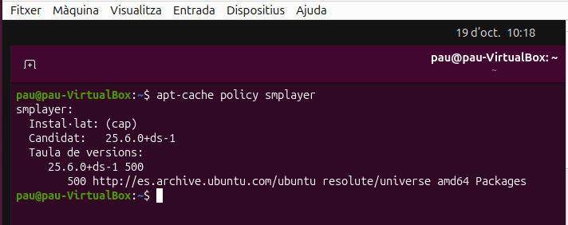
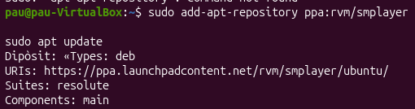
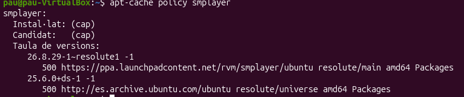
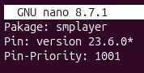
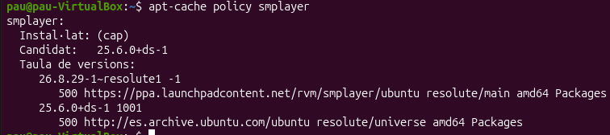
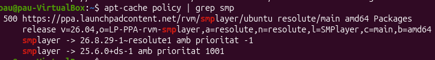

1. Instal·lació i fixació d'aplicacions (pin pakage)
Per a començar, revisarem la prioritat d'actualització i altres dades de l'aplicació amb "apt-cache policy (paquet)".

Ara hem de descarregar els repositoris oficials de smplayer per veure quin es el més antic per a fer-li pinning

Tot seguit, hem de confirmar que els repositoris, per saver si entre el de Ubuntu o el que hem descarregat, quin es el més antic. Això ho farem amb "apt-cache policy smplayer".

A continuació, si la prioritat de la versió actual no es la desitjada, creem el fitxer "/etc/apt/preferenses.d/smplayer-pin-400", on configurarem la prioritat del nostre paquet.
Un cop dintre del nou fitxer, haurem de definir el paquet que volem fixar, d'on surt la distribució i la prioritat que té

Seguidament, revisem la versió amb més prioritat amb l'apt-cache

Per a acabar, amb el comandament "apt-cache policy | grep (paquet)" podem veure les prioritats asignades a aquell paquet.
